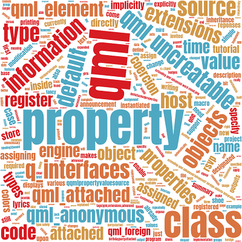

Writing advanced QML Extensions with C++
BirthdayParty Base Project
extending-qml-advanced/advanced1-Base-project
This tutorial uses the example of a birthday party to demonstrate some of the features of QML. The code for the various features explained below is based on this birthday party project and relies on some of the material in the first tutorial on QML extensions. This simple example is then expanded upon to illustrate the various QML extensions explained below. The complete code for each new extension to the code can be found in the tutorials at the location specified under each section's title or by following the link to the code at the very end of this page.

The base project defines the Person class and the BirthdayParty class, which model the attendees and the party itself respectively.
class Person : public QObject { Q_OBJECT Q_PROPERTY(QString name READ name WRITE setName NOTIFY nameChanged FINAL) Q_PROPERTY(int shoeSize READ shoeSize WRITE setShoeSize NOTIFY shoeSizeChanged FINAL) QML_ELEMENT ... QString m_name; int m_shoeSize = 0; }; class BirthdayParty : public QObject { Q_OBJECT Q_PROPERTY(Person *host READ host WRITE setHost NOTIFY hostChanged FINAL) Q_PROPERTY(QQmlListProperty<Person> guests READ guests NOTIFY guestsChanged FINAL) QML_ELEMENT ... Person *m_host = nullptr; QList<Person *> m_guests; };
All the information about the party can then be stored in the corresponding QML file.
BirthdayParty { host: Person { name: "Bob Jones" shoeSize: 12 } guests: [ Person { name: "Leo Hodges" }, Person { name: "Jack Smith" }, Person { name: "Anne Brown" } ] }
The main.cpp file creates a simple shell application that displays whose birthday it is and who is invited to their party.
QQmlEngine engine;
QQmlComponent component(&engine);
component.loadFromModule("People", "Main");
std::unique_ptr<BirthdayParty> party{ qobject_cast<BirthdayParty *>(component.create()) };
The app outputs the following summary of the party.
"Bob Jones" is having a birthday!
They are inviting:
"Leo Hodges"
"Jack Smith"
"Anne Brown"
The following sections go into how to add support for Boy and Girl attendees instead of just Person by using inheritance and coercion, how to make use of default properties to implicitly assign attendees of the party as guests, how to assign properties as groups instead of one by one, how to use attached objects to keep track of invited guests' reponses, how to use a property value source to display the lyrics of the happy birthday song over time, and how to expose third party objects to QML.
Inheritance and Coercion
extending-qml-advanced/advanced2-Inheritance-and-coercion
Right now, each attendant is being modelled as a person. This is a bit too generic and it would be nice to be able to know more about the attendees. By specializing them as boys and girls, we can already get a better idea of who's coming.
To do this, the Boy and Girl classes are introduced, both inheriting from Person.
class Boy : public Person { Q_OBJECT QML_ELEMENT public: using Person::Person; }; class Girl : public Person { Q_OBJECT QML_ELEMENT public: using Person::Person; };
The Person class remains unaltered and the Boy and Girl C++ classes are trivial extensions of it. The types and their QML name are registered with the QML engine with QML_ELEMENT.
Notice that the host and guests properties in BirthdayParty still take instances of Person.
class BirthdayParty : public QObject { Q_OBJECT Q_PROPERTY(Person *host READ host WRITE setHost NOTIFY hostChanged FINAL) Q_PROPERTY(QQmlListProperty<Person> guests READ guests NOTIFY guestsChanged FINAL) QML_ELEMENT ... };
The implementation of the Person class itself has not been changed. However, as the Person class was repurposed as a common base for Boy and Girl, Person should no longer be instantiable from QML directly. An explicit Boy or Girl should be instantiated instead.
class Person : public QObject { ... QML_ELEMENT QML_UNCREATABLE("Person is an abstract base class.") ... };
While we want to disallow instantiating Person from within QML, it still needs to be registered with the QML engine so that it can be used as a property type and other types can be coerced to it. This is what the QML_UNCREATABLE macro does. As all three types, Person, Boy and Girl, have been registered with the QML system, on assignment, QML automatically (and type-safely) converts the Boy and Girl objects into a Person.
With these changes in place, we can now specify the birthday party with the extra information about the attendees as follows.
BirthdayParty { host: Boy { name: "Bob Jones" shoeSize: 12 } guests: [ Boy { name: "Leo Hodges" }, Boy { name: "Jack Smith" }, Girl { name: "Anne Brown" } ] }
Default Properties
extending-qml-advanced/advanced3-Default-properties
Currently, in the QML file, each property is assigned explicitly. For example, the host property is assigned a Boy and the guests property is assigned a list of Boy or Girl. This is easy but it can be made a bit simpler for this specific use case. Instead of assigning the guests property explicitly, we can add Boy and Girl objects inside the party directly and have them assigned to guests implicitly. It makes sense that all the attendees that we specify, and that are not the host, are guests. This change is purely syntactical but it can add a more natural feel in many situations.
The guests property can be designated as the default property of BirthdayParty. Meaning that each object created inside of a BirthdayParty is implicitly appended to the default property guests. The resulting QML looks like this.
BirthdayParty { host: Boy { name: "Bob Jones" shoeSize: 12 } Boy { name: "Leo Hodges" } Boy { name: "Jack Smith" } Girl { name: "Anne Brown" } }
The only change required to enable this behavior is to add the DefaultProperty class info annotation to BirthdayParty to designate guests as its default property.
class BirthdayParty : public QObject { Q_OBJECT Q_PROPERTY(Person *host READ host WRITE setHost NOTIFY hostChanged FINAL) Q_PROPERTY(QQmlListProperty<Person> guests READ guests NOTIFY guestsChanged FINAL) Q_CLASSINFO("DefaultProperty", "guests") QML_ELEMENT ... };
You may already be familiar with this mechanism. The default property for all descendants of Item in QML is the data property. All elements not explicitly added to a property of an Item will be added to data. This makes the structure clear and reduces unnecessary noise in the code.
Grouped Properties
extending-qml-advanced/advanced4-Grouped-properties
More information is needed about the shoes of the guests. Aside from their size, we also want to store the shoes' color, brand, and price. This information is stored in a ShoeDescription class.
class ShoeDescription : public QObject { Q_OBJECT Q_PROPERTY(int size READ size WRITE setSize NOTIFY shoeChanged FINAL) Q_PROPERTY(QColor color READ color WRITE setColor NOTIFY shoeChanged FINAL) Q_PROPERTY(QString brand READ brand WRITE setBrand NOTIFY shoeChanged FINAL) Q_PROPERTY(qreal price READ price WRITE setPrice NOTIFY shoeChanged FINAL) ... };
Each person now has two properties, a name and a shoe description shoe.
class Person : public QObject { Q_OBJECT Q_PROPERTY(QString name READ name WRITE setName NOTIFY nameChanged FINAL) Q_PROPERTY(ShoeDescription *shoe READ shoe WRITE setShoe NOTIFY shoeChanged FINAL) ... };
Specifying the values for each element of the shoe description works but is a bit repetitive.
Girl {
name: "Anne Brown"
shoe.size: 7
shoe.color: "red"
shoe.brand: "Job Macobs"
shoe.price: 99.99
}
Grouped properties provide a more elegant way of assigning these properties. Instead of assigning the values to each property one-by-one, the individual values can be passed as a group to the shoe property making the code more readable. No changes are required to enable this feature as it is available by default for all of QML.
host: Boy {
name: "Bob Jones"
shoe { size: 12; color: "white"; brand: "Bikey"; price: 90.0 }
}
Attached Properties
extending-qml-advanced/advanced5-Attached-properties
The time has come for the host to send out invitations. To keep track of which guests have responded to the invitation and when, we need somewhere to store that information. Storing it in the BirthdayParty object iself would not really fit. A better way would be to store the responses as attached objects to the party object.
First, we declare the BirthdayPartyAttached class which holds the guest reponses.
class BirthdayPartyAttached : public QObject { Q_OBJECT Q_PROPERTY(QDate rsvp READ rsvp WRITE setRsvp NOTIFY rsvpChanged FINAL) QML_ANONYMOUS ... };
And we attach it to the BirthdayParty class and define qmlAttachedProperties() to return the attached object.
class BirthdayParty : public QObject { ... QML_ATTACHED(BirthdayPartyAttached) ... static BirthdayPartyAttached *qmlAttachedProperties(QObject *); };
Now, attached objects can be used in the QML to hold the rsvp information of the invited guests.
BirthdayParty { Boy { name: "Robert Campbell" BirthdayParty.rsvp: Date.fromLocaleString(Qt.locale(), "2023-03-01", "yyyy-MM-dd") } Boy { name: "Leo Hodges" shoe { size: 10; color: "black"; brand: "Reebok"; price: 59.95 } BirthdayParty.rsvp: Date.fromLocaleString(Qt.locale(), "2023-03-03", "yyyy-MM-dd") } host: Boy { name: "Jack Smith" shoe { size: 8; color: "blue"; brand: "Puma"; price: 19.95 } } }
Finally, the information can be accessed in the following way.
QDate rsvpDate;
QObject *attached = qmlAttachedPropertiesObject<BirthdayParty>(guest, false);
if (attached)
rsvpDate = attached->property("rsvp").toDate();
The program outputs the following summary of the party to come.
"Jack Smith" is having a birthday!
He is inviting:
"Robert Campbell" RSVP date: "Wed Mar 1 2023"
"Leo Hodges" RSVP date: "Mon Mar 6 2023"
Property Value Source
extending-qml-advanced/advanced6-Property-value-source
During the party the guests have to sing for the host. It would be handy if the program could display the lyrics customized for the occasion to help the guests. To this end, a property value source is used to generate the verses of the song over time.
class HappyBirthdaySong : public QObject, public QQmlPropertyValueSource { Q_OBJECT Q_INTERFACES(QQmlPropertyValueSource) ... void setTarget(const QQmlProperty &) override; };
The class HappyBirthdaySong is added as a value source. It must inherit from QQmlPropertyValueSource and implement the QQmlPropertyValueSource interface with the Q_INTERFACES macro. The setTarget() function is used to define which property this source acts upon. In this case, the value source writes to the announcement property of the BirthdayParty to display the lyrics over time. It has an internal timer that causes the announcement property of the party to be set to the next line of the lyrics repeatedly.
In QML, a HappyBirthdaySong is instantiated inside the BirthdayParty. The on keyword in its signature is used to specify the property that the value source targets, in this case announcement. The name property of the HappyBirthdaySong object is also bound to the name of the host of the party.
BirthdayParty { id: party HappyBirthdaySong on announcement { name: party.host.name } ... }
The program displays the time at which the party started using the partyStarted signal and then prints the following happy birthday verses over and over.
Happy birthday to you, Happy birthday to you, Happy birthday dear Bob Jones, Happy birthday to you!
Foreign objects integration
extending-qml-advanced/advanced7-Foreign-objects-integration
Instead of just printing the lyrics out to the console, the attendees would like to use a more fancy display with support for colors. They would like to integrate it in the project but currently it is not possible to configure the screen from QML because it comes from a third party library. To solve this, the necessary types need to be exposed to the QML engine so its properties are available for modification in QML directly.
The display can be controlled by the ThirdPartyDisplay class. It has properties to define the content and the foreground and background colors of the text to display.
class Q_DECL_EXPORT ThirdPartyDisplay : public QObject { Q_OBJECT Q_PROPERTY(QString content READ content WRITE setContent NOTIFY contentChanged FINAL) Q_PROPERTY(QColor foregroundColor READ foregroundColor WRITE setForegroundColor NOTIFY colorsChanged FINAL) Q_PROPERTY(QColor backgroundColor READ backgroundColor WRITE setBackgroundColor NOTIFY colorsChanged FINAL) ... };
To expose this type to QML, we can register it with the engine with QML_ELEMENT. However, since the class isn't accessible for modification, QML_ELEMENT cannot simply be added to it. To register the type with the engine, the type needs to be registered from the outside. This is what QML_FOREIGN is for. When used in a type in conjunction with other QML macros, the other macros apply not to the type they reside in but to the foreign type designated by QML_FOREIGN.
class ForeignDisplay : public QObject { Q_OBJECT QML_NAMED_ELEMENT(ThirdPartyDisplay) QML_FOREIGN(ThirdPartyDisplay) };
This way, the BirthdayParty now has a new property with the display.
class BirthdayParty : public QObject { Q_OBJECT Q_PROPERTY(Person *host READ host WRITE setHost NOTIFY hostChanged FINAL) Q_PROPERTY(QQmlListProperty<Person> guests READ guests NOTIFY guestsChanged FINAL) Q_PROPERTY(QString announcement READ announcement WRITE setAnnouncement NOTIFY announcementChanged FINAL) Q_PROPERTY(ThirdPartyDisplay *display READ display WRITE setDisplay NOTIFY displayChanged FINAL) ... };
And, in QML, the colors of the text on the fancy third display can be set explicitly.
BirthdayParty { display: ThirdPartyDisplay { foregroundColor: "black" backgroundColor: "white" } ... }
Setting the announcement property of the BirthdayParty now sends the message to the fancy display instead of printing it itself.
void BirthdayParty::setAnnouncement(const QString &announcement) { if (m_announcement != announcement) { m_announcement = announcement; emit announcementChanged(); } m_display->setContent(announcement); }
The output then looks like this over and over similar to the previous section.
[Fancy ThirdPartyDisplay] Happy birthday to you, [Fancy ThirdPartyDisplay] Happy birthday to you, [Fancy ThirdPartyDisplay] Happy birthday dear Bob Jones, [Fancy ThirdPartyDisplay] Happy birthday to you!
See also Specifying Default and Parent Properties for QML Object Types, Grouped Properties, Providing Attached Properties, Property Value Sources, and Registering Foreign Types.